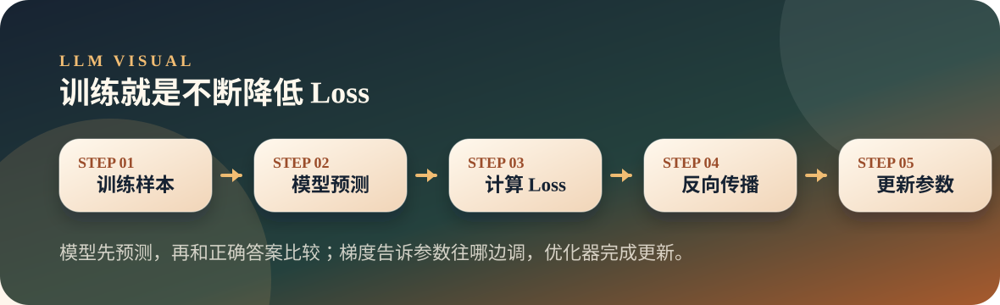
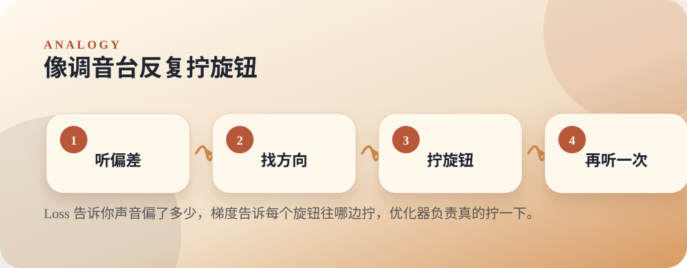

从零开始理解大模型
06. 训练：参数是怎么“学”出来的
训练就是不断预测、计算误差、反向传播、更新参数，让模型逐渐降低 Loss。
TrainingLossGradient
Thesis
文章主旨
训练就是不断预测、计算误差、反向传播、更新参数，让模型逐渐降低 Loss。
刚初始化的模型像一台乱猜的机器。训练的目标不是给它写规则，而是让它在大量样本上反复试错，把参数调到更容易猜对的位置。
Visual
两张图看懂
第一张图讲机制怎么流动，第二张图把抽象概念落到生活直觉。


Analogy
原文比喻
70 亿个旋钮的收音机
文章把训练比成调一台有 70 亿个旋钮的收音机：Loss 告诉你离目标有多远，梯度告诉每个旋钮往哪边转，学习率决定每步走多远。
对应到机制：模型先预测，再和正确答案比较；梯度告诉参数往哪边调，优化器完成更新。
Explain
概念拆解
按下面三步讲，会比直接抛术语更顺：先建立直觉，再解释机制，最后落到本页结论。
Step 01
先预测
训练样本进来后，模型先像平时一样预测下一个 token，这一步还不更新参数。
Step 02
再听偏差
Loss 把预测和正确答案的差距变成一个数，让“猜得离谱不离谱”可以被计算。
Step 03
最后调参数
反向传播计算每个参数该怎么调，优化器执行更新；重复很多次，Loss 才逐步下降。
本页要带走的三句话
- 训练的核心闭环是预测、算 Loss、反向传播、更新参数。
- Loss 下降表示模型在训练数据上越来越不离谱。
- 真实大模型训练只是规模巨大，本质闭环并没有变。
Small Check
可选小实验
用一个微型模型现场看到 Loss 下降，以及模型从乱猜到能续写训练句子。 实验只用于观察现象，不作为本页主线。
可选实验命令
python3 llm/06-training/train_tiny.py- 启动时会打印训练数据长度、词表大小和模型参数量。
- 训练过程中每隔一段时间打印 Loss，通常会看到整体下降。
- 训练后用几个 prompt 生成文本，能看到模型学到了训练语料里的模式。
- 这个小模型不是为了好用，而是为了看清训练循环。
Extend
继续阅读
教学页以讲清文章为主；完整原文与配套脚本保留在仓库中，方便分享后继续查阅。